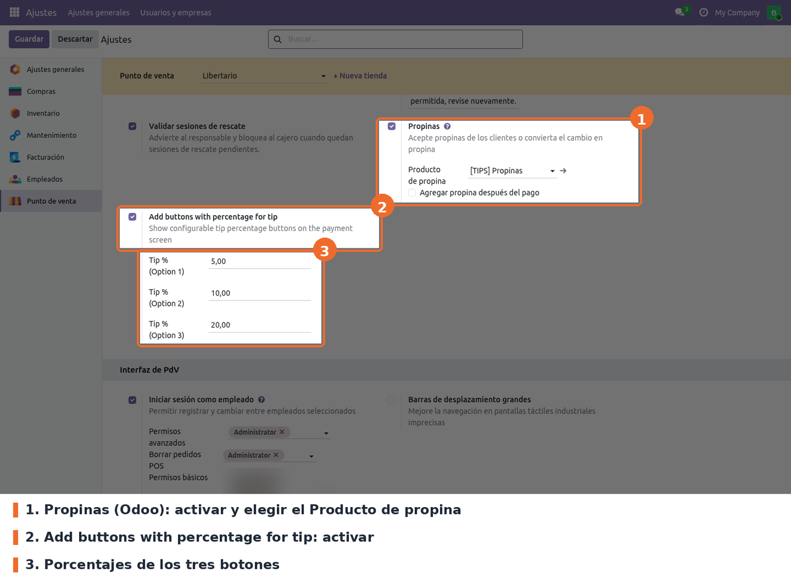
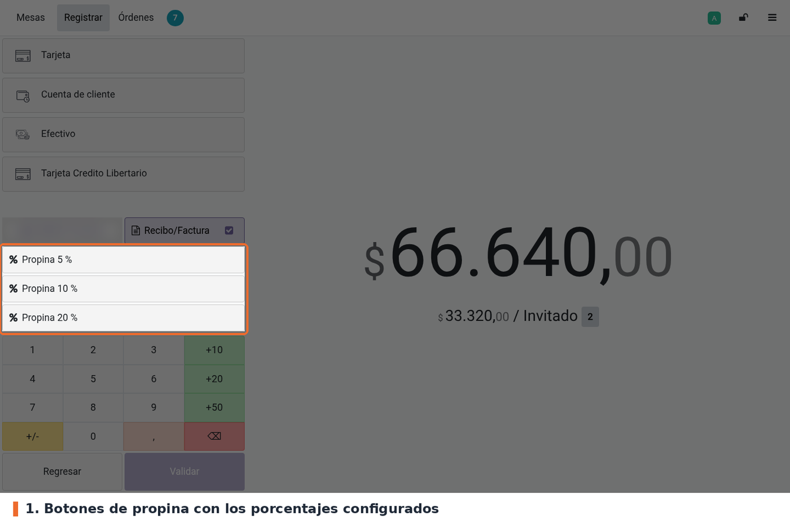
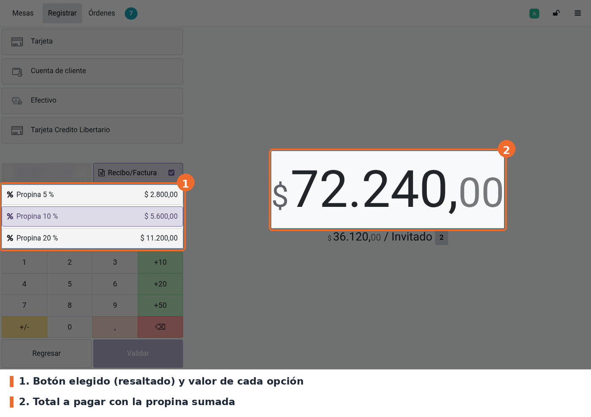
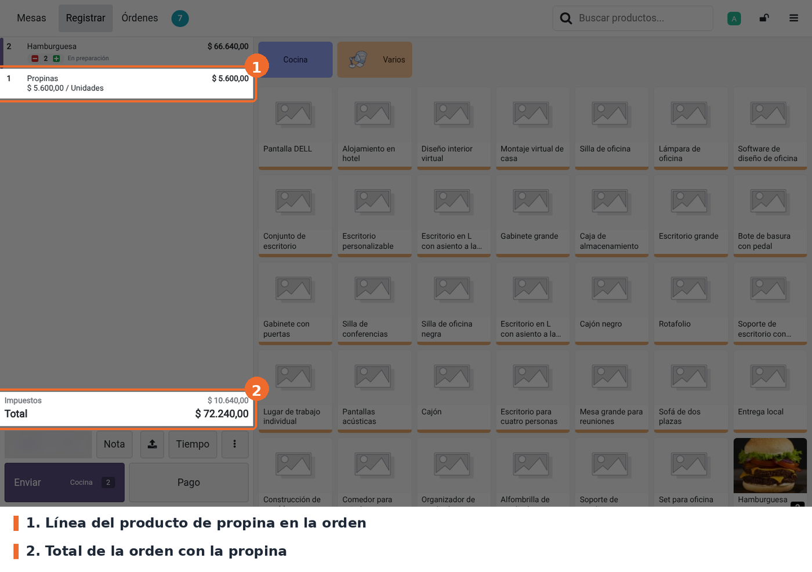

Reemplaza el botón Propina de la pantalla de Pago del Punto de Venta por hasta tres botones de porcentaje configurables por punto de venta (por ejemplo, 5 %, 10 % y 20 %). Al pulsar uno, el POS calcula la propina sobre el subtotal de la orden y la agrega como una línea del producto de propina, sin que el cajero tenga que hacer la cuenta ni escribir el valor.
Relación con Odoo 19: la propina es del núcleo (point_of_sale). Odoo trae un solo botón
Propina que abre un teclado para escribir el valor a mano. Este módulo no cambia cómo se guarda
la propina: usa el mismo producto de propina y el mismo método del núcleo (setTip), así que la
línea de propina y el total quedan igual que con el botón estándar.
Cómo se calcula, según el código (static/src/js/pos_payment.js):
tip_percent_decimals = 0), como en la 17.Ir a Punto de venta › Configuración › Ajustes, elegir el punto de venta en la parte superior y buscar el bloque Pago. El ajuste del módulo está justo después del ajuste Propinas de Odoo.

Punto de venta › Configuración › Ajustes › Pago: Propinas de Odoo y botones de porcentaje del módulo
iface_tipproduct). Obligatorio. Sin él no se ve el ajuste del módulo.
Al activarlo, Odoo propone el Producto de propina (tip_product_id); en esta base es
[TIPS] Propinas. El módulo usa ese producto para la línea de propina.iface_tippercent de pos.config). Obligatorio
para que el módulo actúe; desmarcado por defecto. Al marcarlo aparecen los tres porcentajes.tip_percent1, tip_percent2 y
tip_percent3). Opcionales; 0 por defecto. Cada porcentaje distinto de 0 es un botón en la
pantalla de pago. Un porcentaje en 0 no muestra botón.tip_percent_base). Total sin impuestos (por defecto, igual que en
la 17) o Total con impuestos. En ambos casos se descuenta la propina ya cargada.tip_percent_decimals, 0 a 6). 0 por defecto: redondea a la unidad, igual que
en la 17.A tener en cuenta:
En el POS, cargar la orden y pulsar Pago. Debajo de los métodos de pago aparecen los botones Propina N %, uno por cada porcentaje configurado.

Pantalla de pago con los tres botones de porcentaje
Pulsar el porcentaje que pide el cliente. El POS agrega la propina a la orden y el total a pagar sube en ese valor. El botón elegido queda resaltado; cada botón muestra cuánto sería la propina con su porcentaje.

Propina del 10 % aplicada: botón resaltado, valor de cada opción y total con propina
Después se elige el método de pago y se valida como siempre. La propina es una línea más de la orden, con el producto de propina, y se ve al volver a la pantalla de productos con Regresar.

Orden con la línea del producto de propina y el total actualizado
Con una línea de pago ya cargada. El botón no modifica la línea de pago (como en la 17). Si el cliente entregó más efectivo que el total, el cambio baja en el valor de la propina; si la línea quedó corta, la orden muestra el saldo pendiente y el cajero ajusta el monto. Ejemplo: total $ 10.000, efectivo $ 20.000, propina 10 % ($ 1.000): pago $ 20.000 y cambio $ 9.000.
Orden sin productos o porcentaje que da 0: el botón no hace nada.
static/description/icon.png: en Aplicaciones se ve el ícono genérico de Odoo.models/pos_order.py: pese al nombre, hereda pos.config y agrega iface_tippercent,
tip_percent1, tip_percent2, tip_percent3, tip_percent_base y tip_percent_decimals.models/res_config_settings.py: los campos relacionados en Ajustes, con prefijo pos_ porque
res.config.settings es compartido por todos los módulos.views/pos_order.xml: el ajuste, insertado después de setting[@id='iface_tipproduct'] y
visible solo con Propinas activado.static/src/xml/pos_payment.xml: hereda point_of_sale.PaymentScreenButtons, oculta el botón
addTip cuando hay porcentajes y agrega los botones de porcentaje a continuación.static/src/js/pos_payment.js: parche de PaymentScreen con addTip1..3, getTipBase,
roundTip, getTipX (cálculo), shouldHighlight (resaltado) y addTipPercent, que solo llama a
this.pos.setTip() del núcleo.pos.config no define _load_pos_data_fields y el
POS lee todos sus campos.//button[@t-on-click='addTip'] en
PaymentScreenButtons. Si Odoo cambia ese botón, la herencia falla al cargar el POS.order.priceIncl, order.priceExcl, line.prices, pos.setTip(),
pos.currency.round/isZero/equal y roundDecimals de @web/core/utils/numbers.addTip y sumaba la propina a la línea seleccionada sin descontar el cambio: con
efectivo y cambio, el pago registrado superaba lo recibido (POS-TIP-PERCENT-FE-0001).getTip() devuelve la propina sin impuestos; la base resta la propina sin impuestos del subtotal.
Si el producto de propina tuviera impuestos, el cálculo seguiría siendo sobre la base sin
impuestos de los demás productos.